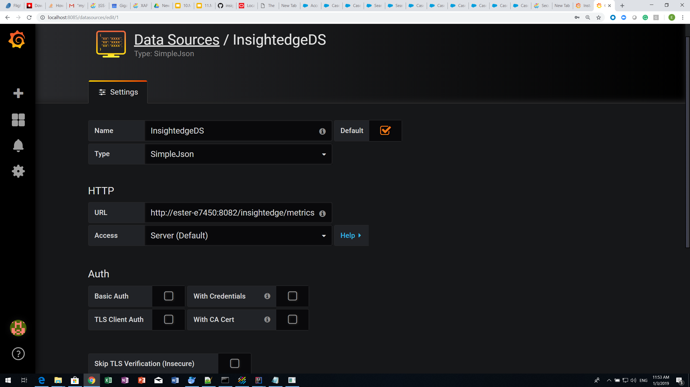
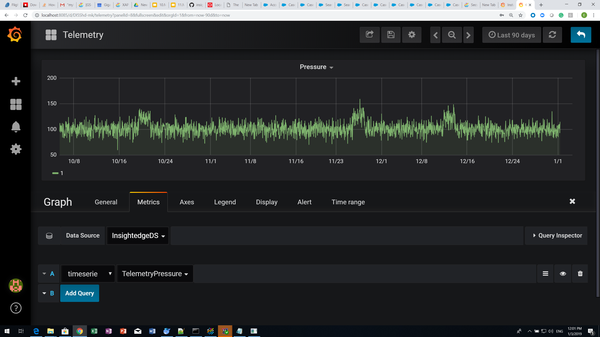

| Author | Product Version | Last Updated | Reference | Download |
|---|---|---|---|---|
| Ester Atzmon | 14.0 | January 2019 | GigaSpaces-Grafana Connector |
Data visualization helps people understand the significance of data by placing it in a visual context. Patterns, trends and correlations can be exposed and recognized using data visualization software.
Data visualization software is also important for big data and advanced analytics projects. Businesses need a fast, easy way to get an overview of their data. Visualization is also key for advanced analytics; when implementing advanced predictive analytics or machine learning algorithms, the output needs to be visualized to monitor results and make sure that the data models are performing correctly.
The GigaSpaces Platform can be easily integrated with Grafana, a graph and dashboard builder for visualizing time-series metrics so users can create, explore, and share their dashboards no matter where the data is stored.
To use Grafana for data visualization with GigaSpaces, you will have to do the following:
After making the above changes, you can visualize data from the Space using Grafana dashboards. The following sections provide detailed instructions on integrating GigaSpaces and Grafana.
This sample integration was run in the following environment:
The first step in integrating GigaSpaces with Grafana is to download and configure the connector so that Grafana can access the data from the GigaSpaces-based application.
The sample configuration files are located in the <host directory>/timeseries-rest/tree/master/src/main/resources folder. When you run the connector, the Main requires two parameters, the path to the grafana-XAP.properties file and the path to the tableData.txt file (if you create different ones).
To install the GigaSpaces-Grafana connector:
Modify the grafana-xap.properties file to suit your local environment (host, port, space name, lookup group, and lookup locator (optional)) or create a new properties file.
Sample configuration:
CONNECTOR_HOST=HostName
CONNECTOR_PORT=8082
The syntax of the URL that is used to configure the simple JSON data source to work with the Space is http://<yourhost>:<port>/insightedge/metrics. The variables are based on values you added to the properties file.
Modify the tablesData.txt file or create a new tableData.txt file that the connector will use to categorize the data.
Sample data values:
TelemetryVolt,com.gigaspaces.Telemetry,longDate,volt,machineID
TelemetryRotate,com.gigaspaces.Telemetry,longDate,rotate,machineID
TelemetryPressure,com.gigaspaces.Telemetry,longDate,pressure,machineID
TelemetryVibration,com.gigaspaces.Telemetry,longDate,vibration,machineID
Each row represents the following fields in Grafana (the values from the first line of the above sample are provided for reference):
TelemetryPressurecom.gigaspaces.TelemetrylongDatepressuremachineIDGrafana is not bundled with GigaSpaces products, but the product installation is easy and straightforward.
To install Grafana:
After you download and install the dashboard application, download and install the SimpleJson data source plugin.
To install the plugin:
\bin folder of the Grafana client software.grafana-cli plugins install grafana-simple-json-datasource. The plugin is installed into your Grafana plugins directory; the default is /var/lib/grafana/plugins.After installing the Grafana client and the SimpleJson data source plugin, you must configure the following so that Grafana will work with the GigaSpaces connector and visualize the data in the Space:
To configure the data source:
In the Settings tab of the Data Sources screen, configure the following:

After you finish configuring the Grafana client, you can create new dashboards to view the data from the Space. For example, using the sample data in the connector package, you can create a Telemetry dashboard, as shown below.
To view the Space data in the dashboard:
